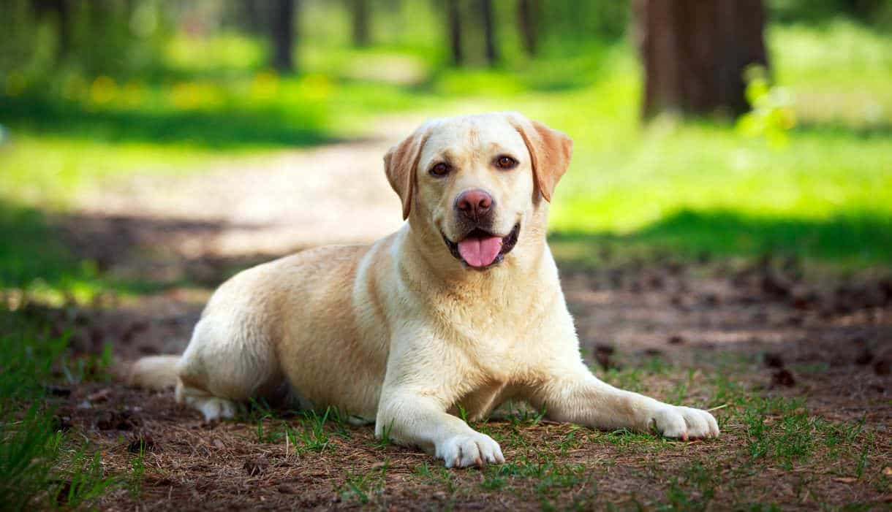

Instruções do Projeto de Aprendizado com Sons de Animais
Este projeto foi criado com o objetivo de tornar o aprendizado mais envolvente e divertido, permitindo que as crianças associem sons de animais às suas imagens correspondentes. Aqui estão alguns exemplos:


Clique nos botões acima para ouvir os sons dos animais e associe-os às imagens correspondentes. Divirta-se aprendendo!
Voltar para a Tela Inicial